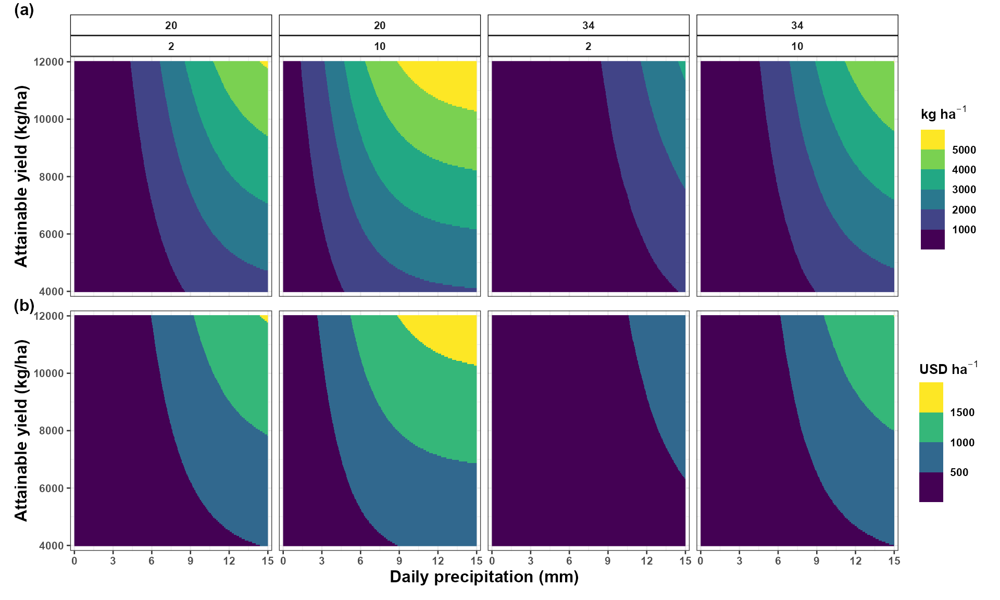
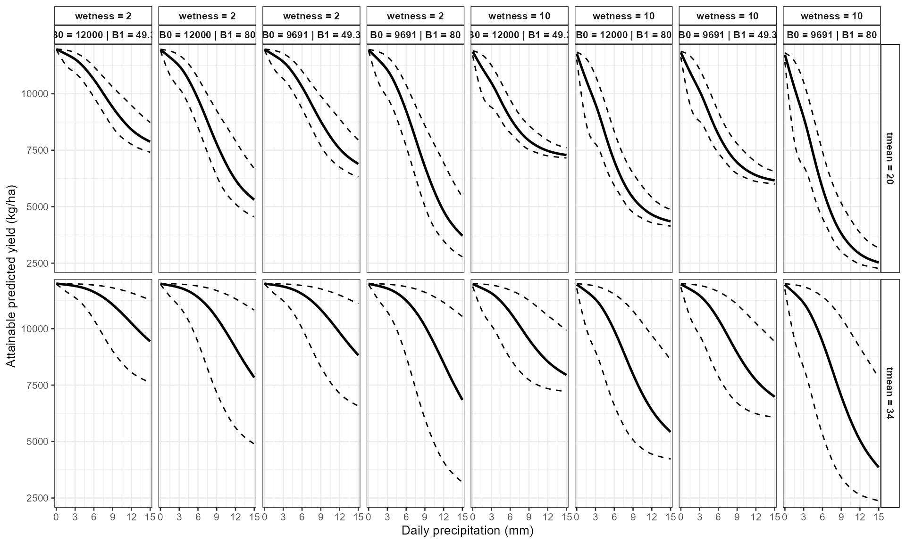

Introduction
Predicted disease intensity alone does not fully describe the potential agronomic consequences of an epidemic.
In many pathosystems, researchers also want to estimate how the predicted disease response may translate into reduced crop yield and economic losses.
EpiExposure connects three modeling stages:
- environmental exposure histories;
- expected disease outcomes from the fitted DLNM;
- user-defined disease-yield and economic relationships.
This vignette demonstrates how scenario predictions can be translated into:
- expected remaining yield;
- yield loss;
- proportional yield loss;
- economic loss;
- comparisons across production scenarios.
What you will learn. This tutorial shows how to convert predicted disease outcomes into yield and economic losses, evaluate sensitivity to attainable yield, and compare the agronomic consequences of alternative environmental scenarios.
Yield and economic losses are not estimated by the DLNM alone. They depend on additional assumptions supplied by the user, including the disease-yield relationship, attainable yield, commodity price, and unit conversions.
The resulting quantities are model-based projections under those assumptions. They should not automatically be interpreted as observed losses or causal effects.
Preparing the epidemiological model
This vignette uses the same example dataset and DLNM specification introduced in the previous tutorials.
data("epi_data")Define the exposure-lag structures:
cb <- define_exposures(
data = epi_data,
vars = c(
"tmean",
"rain",
"wetness"
),
max_lag = 85,
df_var = 3,
df_lag = 2
)Build the epidemic-level design:
dat <- build_design(
data = epi_data,
cb_templates = cb
)Prepare the disease response:
dat <- prepare_response(
data = dat,
response = "y",
family = "beta"
)Fit the DLNM:
fit <- fit_epidlnm(
data = dat,
model_engine = "glmmTMB",
family = "beta",
random_effect = NULL,
epiexposure_spec = attr(
cb,
"spec"
)
)The fitted model is now used to predict disease responses across environmental scenarios and translate those predictions into agronomic and economic quantities.
Translating disease predictions into losses
Disease and yield scales
The fitted Beta model returns predicted disease outcomes on a proportion scale between 0 and 1. However, the damage function used in this example was defined using disease severity in percentage points.
Therefore, predictions and uncertainty limits are converted from proportions to percentages before the yield-loss relationship is applied:
This conversion is specific to the damage function used in the example. Users must verify the disease scale associated with their own slope and intercept parameters.
Generating disease scenarios
Define biologically meaningful lag periods:
periods <- define_periods(
max_lag = 85,
cuts = c(
20,
40,
60
),
prefix = "Period"
)Generate a scenario grid in which rainfall varies continuously across selected temperature and leaf wetness conditions:
range_losses <- simulate_ranges(
periods = periods,
vary = list(
tmean = c(
20,
34
),
rain = seq(
0,
15,
by = 0.01
),
wetness = c(
2,
10
)
),
scenario_type = "grid",
scenario_var = "rain"
)The fine rainfall sequence provides a smooth grid for visualizing the modeled disease and loss relationships. It should not be interpreted as additional observed information.
Predict expected disease outcomes and propagate coefficient uncertainty:
scenarios_losses <- simulate_scenarios(
fit = fit,
scenarios = range_losses,
data = epi_data,
uncertainty = TRUE,
output = "summary",
n_samples = 1000,
seed = 123
)The Beta-model predictions are proportions. Convert the central estimates and interval limits to percentage points because the damage coefficient used below was defined for percentage disease severity:
scenarios_losses$prediction <- (
scenarios_losses$prediction * 100
)
scenarios_losses$prediction_lower <- (
scenarios_losses$prediction_lower * 100
)
scenarios_losses$prediction_upper <- (
scenarios_losses$prediction_upper * 100
)Match the damage-function scale. Multiplication by 100 is appropriate only because this example applies a damage coefficient defined per percentage point of disease severity. Do not perform this conversion when the damage function was estimated directly from proportions.
Simulating yield and economic losses
A single damage function
Suppose expected yield under disease is described by the linear relationship:
where:
- is expected yield under disease;
- is disease severity in percentage points;
- is the intercept of the damage function;
- is the yield reduction per percentage point of disease severity.
For this example:
intercept = 9691.0
slope = 49.3Thus, each additional percentage point of predicted severity is associated with 49.3 kilograms per percentage point (kg/p.p) under the specified damage relationship.
Estimate yield and economic losses over attainable yields ranging from 4,000 to 12,000:
losses <- simulate_losses(
data = scenarios_losses,
lower = "prediction_lower",
upper = "prediction_upper",
y = "prediction",
slope = 49.3,
parameter_mode = "values",
intercept = 9691.0,
attainable_yield = seq(
4000,
12000,
by = 50
),
price = 300
)In this example, price = 300 represents a commodity
price of 300 USD per metric ton. Because yield loss is expressed in kg
ha⁻¹, simulate_losses() internally converts yield loss from
kilograms to metric tons before calculating economic loss:
where is yield loss in kg ha⁻¹, is commodity price in USD t⁻¹, and is economic loss in USD ha⁻¹.
Inspect the resulting columns:
names(
losses
)
#> [1] "scenario" "scenario_point" "tmean"
#> [4] "rain" "wetness" "prediction"
#> [7] "prediction_sd" "prediction_lower" "prediction_upper"
#> [10] ".loss_row_id" ".sim" "slope_sim"
#> [13] "intercept_sim" "rand_eff" "ref_yield"
#> [16] "att_yield" "price" "y_used"
#> [19] "y_lower" "y_upper" "yl_prop_raw"
#> [22] "yl_capped" "pred_yield" "rl_prop"
#> [25] "rl_pct" "yl_prop" "yl_pct"
#> [28] "ap_yield" "yield_loss" "econ_loss"
#> [31] "yl_prop_raw_lower" "yl_prop_raw_upper" "pred_yield_lower"
#> [34] "pred_yield_upper" "rl_prop_lower" "rl_prop_upper"
#> [37] "rl_pct_lower" "rl_pct_upper" "yl_prop_lower"
#> [40] "yl_prop_upper" "yl_pct_lower" "yl_pct_upper"
#> [43] "ap_yield_lower" "ap_yield_upper" "yield_loss_lower"
#> [46] "yield_loss_upper" "econ_loss_lower" "econ_loss_upper"
#> [49] "yl_capped_lower" "yl_capped_upper"| scenario | scenario_point | tmean | rain | wetness | prediction | prediction_sd | prediction_lower | prediction_upper | .loss_row_id | .sim | slope_sim | intercept_sim | rand_eff | ref_yield | att_yield | price | y_used | y_lower | y_upper | yl_prop_raw | yl_capped | pred_yield | rl_prop | rl_pct | yl_prop | yl_pct | ap_yield | yield_loss | econ_loss | yl_prop_raw_lower | yl_prop_raw_upper | pred_yield_lower | pred_yield_upper | rl_prop_lower | rl_prop_upper | rl_pct_lower | rl_pct_upper | yl_prop_lower | yl_prop_upper | yl_pct_lower | yl_pct_upper | ap_yield_lower | ap_yield_upper | yield_loss_lower | yield_loss_upper | econ_loss_lower | econ_loss_upper | yl_capped_lower | yl_capped_upper |
|---|---|---|---|---|---|---|---|---|---|---|---|---|---|---|---|---|---|---|---|---|---|---|---|---|---|---|---|---|---|---|---|---|---|---|---|---|---|---|---|---|---|---|---|---|---|---|---|---|---|
| RAIN_s1 | 1 | 20 | 0 | 2 | 0.645 | 0.002 | 0.348 | 1.252 | 1 | 1 | 49.3 | 9691 | 0 | 9691 | 4000 | 300 | 0.645 | 0.348 | 1.252 | 0.003 | FALSE | 9659.209 | 0.997 | 99.672 | 0.003 | 0.328 | 3986.878 | 13.122 | 3.937 | 0.002 | 0.006 | 9629.299 | 9673.824 | 0.994 | 0.998 | 99.363 | 99.823 | 0.002 | 0.006 | 0.177 | 0.637 | 3974.533 | 3992.910 | 7.090 | 25.467 | 2.127 | 7.640 | FALSE | FALSE |
| RAIN_s1 | 1 | 20 | 0 | 2 | 0.645 | 0.002 | 0.348 | 1.252 | 1 | 1 | 49.3 | 9691 | 0 | 9691 | 4050 | 300 | 0.645 | 0.348 | 1.252 | 0.003 | FALSE | 9659.209 | 0.997 | 99.672 | 0.003 | 0.328 | 4036.714 | 13.286 | 3.986 | 0.002 | 0.006 | 9629.299 | 9673.824 | 0.994 | 0.998 | 99.363 | 99.823 | 0.002 | 0.006 | 0.177 | 0.637 | 4024.214 | 4042.822 | 7.178 | 25.786 | 2.153 | 7.736 | FALSE | FALSE |
| RAIN_s1 | 1 | 20 | 0 | 2 | 0.645 | 0.002 | 0.348 | 1.252 | 1 | 1 | 49.3 | 9691 | 0 | 9691 | 4100 | 300 | 0.645 | 0.348 | 1.252 | 0.003 | FALSE | 9659.209 | 0.997 | 99.672 | 0.003 | 0.328 | 4086.550 | 13.450 | 4.035 | 0.002 | 0.006 | 9629.299 | 9673.824 | 0.994 | 0.998 | 99.363 | 99.823 | 0.002 | 0.006 | 0.177 | 0.637 | 4073.896 | 4092.733 | 7.267 | 26.104 | 2.180 | 7.831 | FALSE | FALSE |
| RAIN_s1 | 1 | 20 | 0 | 2 | 0.645 | 0.002 | 0.348 | 1.252 | 1 | 1 | 49.3 | 9691 | 0 | 9691 | 4150 | 300 | 0.645 | 0.348 | 1.252 | 0.003 | FALSE | 9659.209 | 0.997 | 99.672 | 0.003 | 0.328 | 4136.386 | 13.614 | 4.084 | 0.002 | 0.006 | 9629.299 | 9673.824 | 0.994 | 0.998 | 99.363 | 99.823 | 0.002 | 0.006 | 0.177 | 0.637 | 4123.578 | 4142.645 | 7.355 | 26.422 | 2.207 | 7.927 | FALSE | FALSE |
| RAIN_s1 | 1 | 20 | 0 | 2 | 0.645 | 0.002 | 0.348 | 1.252 | 1 | 1 | 49.3 | 9691 | 0 | 9691 | 4200 | 300 | 0.645 | 0.348 | 1.252 | 0.003 | FALSE | 9659.209 | 0.997 | 99.672 | 0.003 | 0.328 | 4186.222 | 13.778 | 4.133 | 0.002 | 0.006 | 9629.299 | 9673.824 | 0.994 | 0.998 | 99.363 | 99.823 | 0.002 | 0.006 | 0.177 | 0.637 | 4173.259 | 4192.556 | 7.444 | 26.741 | 2.233 | 8.022 | FALSE | FALSE |
| RAIN_s1 | 1 | 20 | 0 | 2 | 0.645 | 0.002 | 0.348 | 1.252 | 1 | 1 | 49.3 | 9691 | 0 | 9691 | 4250 | 300 | 0.645 | 0.348 | 1.252 | 0.003 | FALSE | 9659.209 | 0.997 | 99.672 | 0.003 | 0.328 | 4236.058 | 13.942 | 4.183 | 0.002 | 0.006 | 9629.299 | 9673.824 | 0.994 | 0.998 | 99.363 | 99.823 | 0.002 | 0.006 | 0.177 | 0.637 | 4222.941 | 4242.467 | 7.533 | 27.059 | 2.260 | 8.118 | FALSE | FALSE |
| RAIN_s1 | 1 | 20 | 0 | 2 | 0.645 | 0.002 | 0.348 | 1.252 | 1 | 1 | 49.3 | 9691 | 0 | 9691 | 4300 | 300 | 0.645 | 0.348 | 1.252 | 0.003 | FALSE | 9659.209 | 0.997 | 99.672 | 0.003 | 0.328 | 4285.894 | 14.106 | 4.232 | 0.002 | 0.006 | 9629.299 | 9673.824 | 0.994 | 0.998 | 99.363 | 99.823 | 0.002 | 0.006 | 0.177 | 0.637 | 4272.623 | 4292.379 | 7.621 | 27.377 | 2.286 | 8.213 | FALSE | FALSE |
| RAIN_s1 | 1 | 20 | 0 | 2 | 0.645 | 0.002 | 0.348 | 1.252 | 1 | 1 | 49.3 | 9691 | 0 | 9691 | 4350 | 300 | 0.645 | 0.348 | 1.252 | 0.003 | FALSE | 9659.209 | 0.997 | 99.672 | 0.003 | 0.328 | 4335.730 | 14.270 | 4.281 | 0.002 | 0.006 | 9629.299 | 9673.824 | 0.994 | 0.998 | 99.363 | 99.823 | 0.002 | 0.006 | 0.177 | 0.637 | 4322.304 | 4342.290 | 7.710 | 27.696 | 2.313 | 8.309 | FALSE | FALSE |
| RAIN_s1 | 1 | 20 | 0 | 2 | 0.645 | 0.002 | 0.348 | 1.252 | 1 | 1 | 49.3 | 9691 | 0 | 9691 | 4400 | 300 | 0.645 | 0.348 | 1.252 | 0.003 | FALSE | 9659.209 | 0.997 | 99.672 | 0.003 | 0.328 | 4385.566 | 14.434 | 4.330 | 0.002 | 0.006 | 9629.299 | 9673.824 | 0.994 | 0.998 | 99.363 | 99.823 | 0.002 | 0.006 | 0.177 | 0.637 | 4371.986 | 4392.201 | 7.799 | 28.014 | 2.340 | 8.404 | FALSE | FALSE |
| RAIN_s1 | 1 | 20 | 0 | 2 | 0.645 | 0.002 | 0.348 | 1.252 | 1 | 1 | 49.3 | 9691 | 0 | 9691 | 4450 | 300 | 0.645 | 0.348 | 1.252 | 0.003 | FALSE | 9659.209 | 0.997 | 99.672 | 0.003 | 0.328 | 4435.402 | 14.598 | 4.379 | 0.002 | 0.006 | 9629.299 | 9673.824 | 0.994 | 0.998 | 99.363 | 99.823 | 0.002 | 0.006 | 0.177 | 0.637 | 4421.668 | 4442.113 | 7.887 | 28.332 | 2.366 | 8.500 | FALSE | FALSE |
Visualizing the loss scenarios
plot_losses() can display the yield and economic
consequences across the environmental scenario grid.
losses_plot <- plot_losses(
data = losses,
x = "rain",
y = "att_yield",
facet = c(
"tmean",
"wetness"
),
type = "heatmap",
x_breaks = seq(
0,
15,
by = 3
),
y_breaks = seq(
4000,
12000,
by = 2000
),
x_label = "Daily precipitation (mm)",
nrow = 2,
facet_ncol = 4
)
losses_plot
The heatmap summarizes the complete modeling chain:
rainfall, temperature, and leaf wetness scenarios
↓
predicted disease severity
↓
linear damage relationship
↓
estimated yield and economic lossesRainfall should not be interpreted in isolation because the panels also represent different temperature and leaf wetness conditions.
Sensitivity to damage-function parameters
Damage-function parameters may vary among studies, cultivars,
production systems, or experimental conditions.
simulate_losses() can evaluate multiple parameter values to
show how agronomic conclusions depend on the selected disease-yield
relationship.
The following example compares two parameter combinations:
Damage relationship 1: intercept = 9691.0, slope = 49.3
Damage relationship 2: intercept = 12000, slope = 80
losses_sensitivity <- simulate_losses(
data = scenarios_losses,
lower = "prediction_lower",
upper = "prediction_upper",
y = "prediction",
slope = c(
49.3,
80
),
parameter_mode = "values",
intercept = c(
9691.0,
12000
),
attainable_yield = seq(
4000,
12000,
by = 50
),
price = 300
)The parameter combinations represent alternative damage relationships rather than uncertainty intervals around one damage function. Their scientific source and interpretation should be stated explicitly in a real analysis.
Visualize the modeled relationship between rainfall and predicted yield for a selected attainable yield:
plot_losses(
data = losses_sensitivity,
x = "rain",
y = "att_yield",
facet = c(
"tmean",
"wetness"
),
type = "regression",
reg_y = "ap_yield",
att_yield = 12000,
x_breaks = seq(
0,
15,
by = 3
),
x_label = "Daily precipitation (mm)"
)
This sensitivity analysis helps determine whether the agronomic conclusions remain similar across plausible disease-yield relationships.
Interpreting the loss results
The outputs combine assumptions from several stages:
- the fitted exposure-lag-response model;
- the simulated environmental scenarios;
- the conversion of disease predictions into percentage severity;
- the selected slope and intercept;
- the attainable-yield range;
- the commodity price.
The lower and upper disease-prediction
limits are transformed through the damage relationship to obtain
corresponding loss limits. This interval transformation does not
automatically represent full draw-by-draw propagation of every source of
uncertainty.
The resulting limits do not automatically include uncertainty in:
- slope;
- intercept;
- attainable yield;
- commodity price;
- environmental scenario assumptions.
The second analysis varies slope and intercept explicitly, but these values are alternative parameter combinations rather than random draws from an estimated joint parameter distribution.
Practical applications
When supported by appropriate data and assumptions, yield and economic loss simulations can help researchers:
- translate disease predictions into agronomic units;
- compare hypothetical environmental scenarios;
- examine sensitivity to attainable yield;
- evaluate sensitivity to commodity price;
- identify scenarios associated with larger modeled losses;
- connect disease forecasting with production consequences;
- explore assumptions used in management or climate scenarios.
These applications remain conditional on the fitted epidemiological model and the disease-yield relationship supplied by the user.
Reporting checklist
When reporting loss estimates, specify:
- the response family and disease scale;
- the fitted DLNM specification;
- the environmental profiles or scenarios;
- the disease-yield equation;
- the source and units of the slope and intercept;
- the range and units of attainable yield;
- the commodity price and price unit;
- any conversion between kilograms and metric tons;
- the uncertainty sources that were propagated;
- whether the results are associational projections or causal estimates.
Summary
This vignette demonstrated how EpiExposure connects
exposure-lag-response modeling with agronomic and economic outcomes.
The workflow is:
complete exposure histories
↓
fitted DLNM
↓
expected disease response
↓
user-supplied disease-yield relationship
↓
expected remaining yield
↓
yield loss
↓
economic lossThe DLNM describes the modeled association between environmental histories and disease. The damage function translates predicted disease into expected yield, and commodity price translates yield loss into economic units.
Each stage introduces assumptions that should be documented and evaluated through sensitivity analysis.
Next steps
The next section focuses on model selection and ensemble prediction.
Topics include:
-
find_bestfit(); - model ranking;
- cross-validation;
-
ensemble_bestfit().
These tools help compare candidate exposure-lag specifications and evaluate their predictive performance.